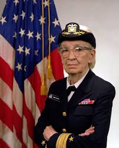

GRACE MURRAY HOPPER
A legacy of innovation and diligence
Timeline of Grace Murray Hopper's life:
- 1906: Grace is born
Born on December 9th, 1906 in New York City, New York. - 1925: Grace starts at Vassar College
Begins school at Vassar College in New York - studying mathematics and physics. - 1928: Grace graduates
Graduates from Vassar and moves on to study at Yale University, working on a Master's degree in Mathematics. - 1930: Grace gets a Degree and gets married
Gets a Master's degree in Mathematics. Marries Vincent Foster Hopper and becomes Grace Hopper, a name she will keep long after their divorce in 1945. - 1931: Grace teaches at Vassar & continues studying at Yale
Becomes a teacher at Vassar and also keeps studying at Yale, hoping to get a Ph.D. in Mathematics. - 1934: Grace gets a Ph.D. in Mathematics
Gets her Ph.D. in Mathematics from Yale, becomes the first woman to earn such a degree. - 1943: Grace joins the Navy
Joins the US Naval Reserve in 1943. She opts for the Navy, as it was her grandfather's branch of service. - 1944: Grace is commissioned as a Lieutenant
Gets commissioned as lieutenant in 1944 and is assigned to the Bureau of Ordnance Project at Harvard. - 1952: Grace's Team Creates the First Compiler
Creates the first compiler for computer languages (a compiler renders worded instructions into code that can be read by computers). - 1967: 2nd timer Navy Officer
Retires from the Naval Reserve in 1966. - 1987: Grace's last working years
Takes another job post-retirement and stays in the computer industry for several more years. - 1991: Grace gets awarded
Receives the National Medal of Technology award in becoming the first female individual recipient of the honor. - 1992: Grace Hopper dies
Dies at the age of 85, in Arlington, Virginia, on January 1, 1992. - 2016: Last awards
Grace is posthumously honored with the Presidential Medal of Freedom by Barack Obama.

"A ship in port is safe, but that is not what ships are for. Sail out to sea and do new things."
-- GRACE MURRAY HOPPER
Read more about this prodigious personality on her Wikipedia entry.